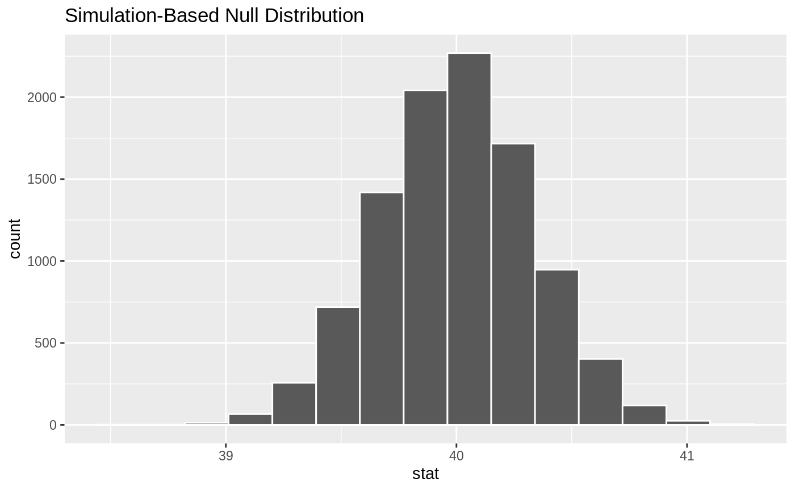
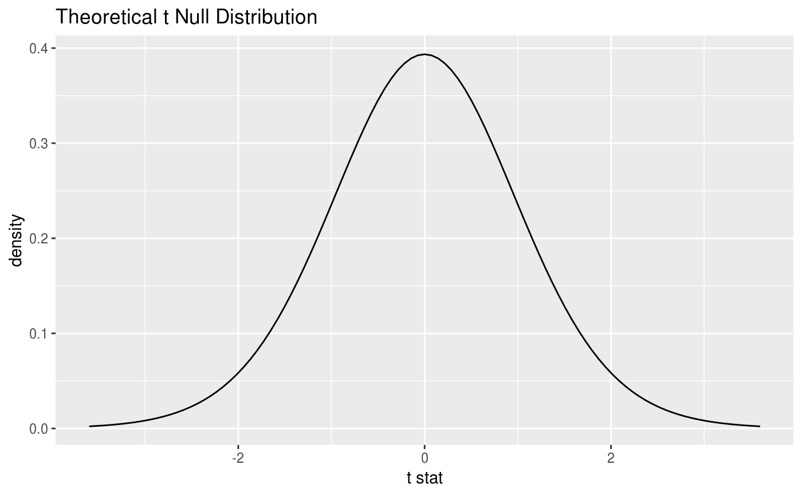
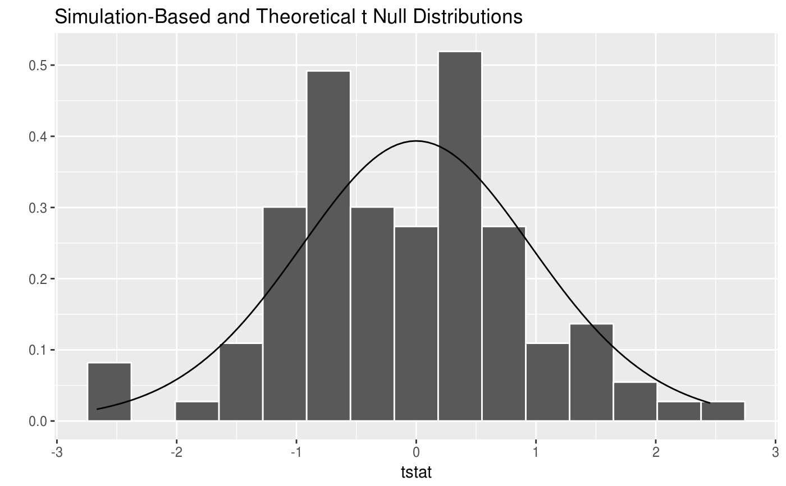

R/visualize.R
visualize.RdVisualize the distribution of the simulation-based inferential statistics or the theoretical distribution (or both!)
visualize(data, bins = 15, method = "simulation", dens_color = "black", obs_stat = NULL, obs_stat_color = "#e51010", shade_color = "#efb8b8", direction = NULL, ...)
| data | the output from |
|---|---|
| bins | the number of bins in the histogram |
| method | a string giving the method to display. Options are "simulation", "theoretical", or "both" with "both" corresponding to "simulation" and "theoretical" |
| dens_color | a character or hex string specifying the color of the theoretical density curve |
| obs_stat | a numeric value corresponding to what the observed statistic is |
| obs_stat_color | a character or hex string specifying the color of the observed statistic |
| shade_color | a character or hex string specifying the color to shade |
| direction | a string specifying in which direction the shading should occur. Options are "less", "greater", or "two_sided". Can also specify "left", "right", or "both". |
| ... | currently ignored |
A ggplot object showing the simulation-based distribution as a histogram or bar graph. Also used to show the theoretical curves.
# Permutations to create a simulation-based null distribution for # one numerical response and one categorical predictor # using t statistic mtcars %>% dplyr::mutate(am = factor(am)) %>% specify(mpg ~ am) %>% # alt: response = mpg, explanatory = am hypothesize(null = "independence") %>% generate(reps = 100, type = "permute") %>% calculate(stat = "t", order = c("1", "0")) %>% visualize(method = "simulation") #default method# Theoretical t distribution for # one numerical response and one categorical predictor # using t statistic mtcars %>% dplyr::mutate(am = factor(am)) %>% specify(mpg ~ am) %>% # alt: response = mpg, explanatory = am hypothesize(null = "independence") %>% # generate() is not needed since we are not doing simulation calculate(stat = "t", order = c("1", "0")) %>% visualize(method = "theoretical")#> Warning: Check to make sure the conditions have been met for the theoretical method. `infer` currently does not check these for you.# Overlay theoretical distribution on top of randomized t-statistics mtcars %>% dplyr::mutate(am = factor(am)) %>% specify(mpg ~ am) %>% # alt: response = mpg, explanatory = am hypothesize(null = "independence") %>% generate(reps = 100, type = "permute") %>% calculate(stat = "t", order = c("1", "0")) %>% visualize(method = "both")#> Warning: Check to make sure the conditions have been met for the theoretical method. `infer` currently does not check these for you.